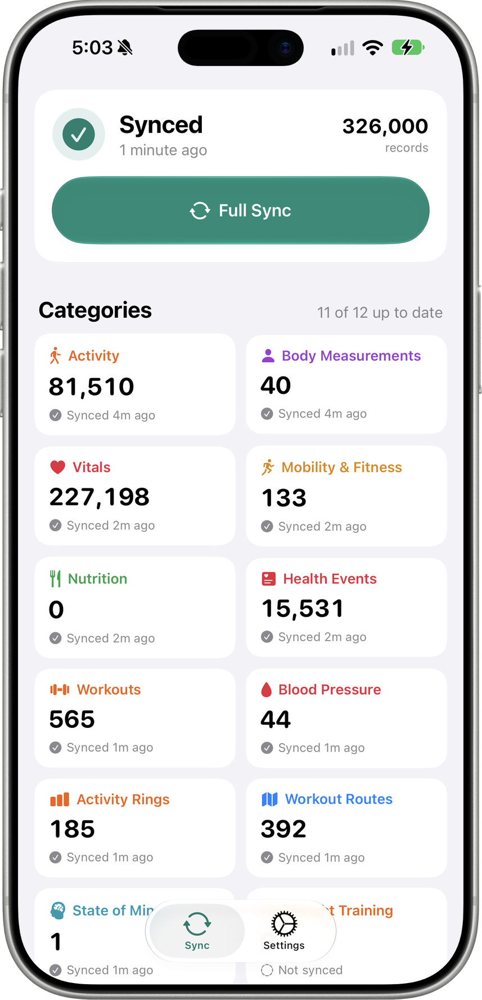
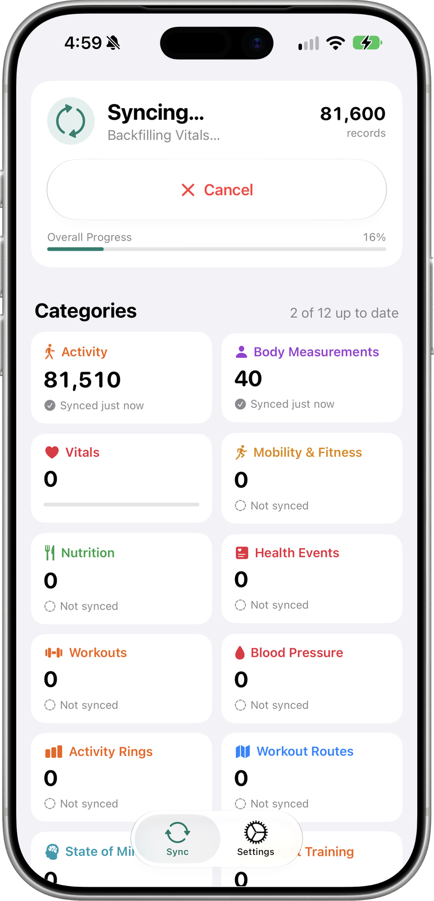
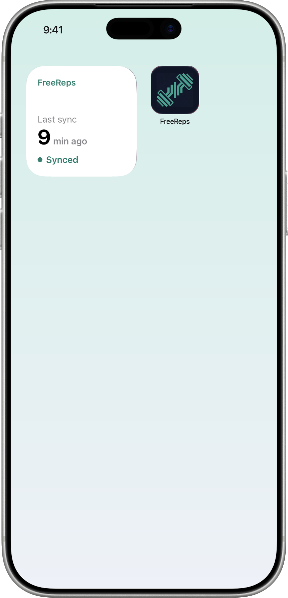
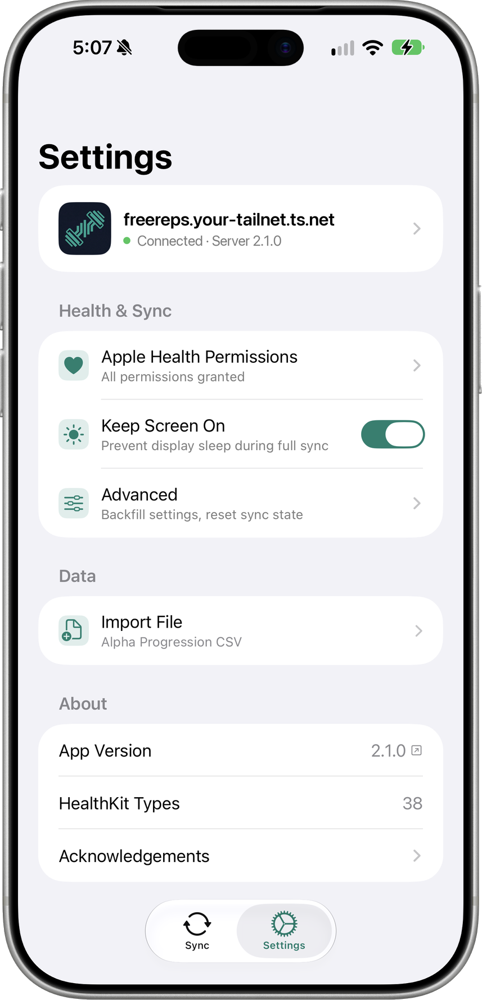

iOS app
Sync Apple Health to your server from the app, a widget or Siri.
FreeReps is an iOS companion app that syncs Apple HealthKit data to a FreeReps server via HTTP. Your health data flows from HealthKit on your phone to your self-hosted server — no cloud services, no third parties.
Shortcuts action
“Sync Health Data” for Shortcuts automations, Siri and the Action button.
Widget
Shows when the last sync finished and whether it succeeded; tapping it opens the app and starts a sync.
Full sync with resumable backfill
The first run backfills the configured range; later runs resend the 7 days before the previous run.
Server decides what it accepts
A fixed set of HealthKit types. Per user, the server picks which metrics it takes, and the app skips the rest before reading HealthKit.



